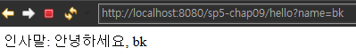

<meta charset="utf-8">
<html lang="ko">
<head>
    <link rel="stylesheet" type="text/css" href="./../style.css" />
    <title>Ch9. 스프링 MVC</title>
</head>
<body id="tt-body-page" class="">
<div id="wrap" class="wrap-right">
    <div id="container">
        <main class="main ">
            <div class="area-main">
                <div class="area-view">
                    <div class="article-header">
                        <div class="inner-article-header">
                            <div class="box-meta">
                                <h2 class="title-article">Ch9. 스프링 MVC</h2>
                                <div class="box-info">
                                    <p class="category">Web</p>
                                    <p class="date">2022-07-11 17:24:12</p>
                                </div>
                            </div>
                        </div>
                    </div>
                    <hr>
                    <div class="article-view">
                        <div class="contents_style">
                            <p data-ke-size="size16">지금까지 JetBrains의 Intellij IDE를 썼었는데, 찾아보니까 무료버전인 community edition은 서버 추가가 안된다고 한다.&nbsp;</p>
<p data-ke-size="size16">따라서 이번 챕터는 eclipse를 쓰기로 했다.</p>
<p data-ke-size="size16">또한 eclipse가 기존에 ecllipse for java developer 로 설치되어 있었는데 <b>웹 구현을 위해서는 eclipse ide for java ee developer</b>로 설치해야 한다.&nbsp;</p>
<p data-ke-size="size16">&nbsp;</p>
<h2 data-ke-size="size26"><b>MVC (Model View Controller)</b></h2>
<p data-ke-size="size16"><b>Model : </b>data를 처리하는 영역&nbsp;</p>
<p data-ke-size="size16"><b>View</b> : 결과 화면을 만들어내는 영역&nbsp;</p>
<p data-ke-size="size16"><b>Controller</b> : 웹의 요청을 처리, View와 Model의 중간 다리 역활. User가 데이터를 클릭하고 수정하는 등의 이벤트들을 처리.</p>
<p data-ke-size="size16">&nbsp;</p>
<h2 data-ke-size="size26"><b>스프링 MVC를 위한 설정</b></h2>
<p data-ke-size="size16">MvcConfig.java에서 @EnableWebMvc와 WebMvcConfigurer 인터페이스를 이용해 설정한다.</p>
<p data-ke-size="size16">web.xml에서 웹 요청에 응답하는 DispatcherServlet을 설정한다.</p>
<p data-ke-size="size16">&nbsp;</p>
<h4 data-ke-size="size20"><b>sp5-chap09/src/main/java/config/MvcConfig.java&nbsp;</b></h4>
<pre id="code_1657524517416" class="crystal" data-ke-language="java" data-ke-type="codeblock"><code>package config;

import org.springframework.context.annotation.Configuration;
import org.springframework.web.servlet.config.annotation.DefaultServletHandlerConfigurer;
import org.springframework.web.servlet.config.annotation.EnableWebMvc;
import org.springframework.web.servlet.config.annotation.ViewResolverRegistry;
import org.springframework.web.servlet.config.annotation.WebMvcConfigurer;

@Configuration
@EnableWebMvc
public class MvcConfig implements WebMvcConfigurer 
{

	@Override
	public void configureDefaultServletHandling(DefaultServletHandlerConfigurer configurer) {
		configurer.enable();
	}

	@Override
	public void configureViewResolvers(ViewResolverRegistry registry) {
		registry.jsp("/WEB-INF/view/", ".jsp");
	}

}</code></pre>
<p data-ke-size="size16"><b>MvcConfig 클래스</b>는 스프링 <b>MVC의 다양한 구성요소들을 설정하는 클래스</b>다.&nbsp;</p>
<p data-ke-size="size16">&nbsp;</p>
<p data-ke-size="size16"><b>@EnableWebMvc</b> 애노테이션은 스프링 MVC를 사용하는데 필요한 <b>기본적인 다양한 설정</b>을 생성해준다.&nbsp;</p>
<p data-ke-size="size16">이게 없다면 많은 설정들을 일일히 처리해 줘야 한다.&nbsp;</p>
<p data-ke-size="size16"><b>DispatcherServlet은 컨트롤러(핸들러)를 찾고, 실행하기 위해 HandlerMapping과 HandlerAdapter를 사용하기 때문에, 핸들러</b></p>
<p data-ke-size="size16"><b>에 알맞은 이 두 타입의 빈이 스프링 설정에 등록되있어야 한다.&nbsp;</b></p>
<p data-ke-size="size16">@EnableWebMvc가 해주는 기본적인 다양한 설정에 이것이 포함된다.&nbsp;</p>
<p data-ke-size="size16">&nbsp;</p>
<p data-ke-size="size16">&nbsp;</p>
<p data-ke-size="size16">MvcConfig 클래스는 <b><u>WebMvcConfigurer</u> 인터페이스</b>를 구현한다.</p>
<p data-ke-size="size16">@EnableWebMvc가 기본적인 설정을을 생성해주고, <b>WebMvcConfigurer에서 개별 설정을 조정한다.</b></p>
<p data-ke-size="size16">MvcConfig 클래스에는 @Configuration 애노테이션이 있고 WebMvcConfigurer 인터페이스를 구현한다, 이는 <b>해당 클래스가 WebMvcConfigurer 빈 객체가 됨을 의미한다.</b></p>
<p data-ke-size="size16">&nbsp;</p>
<p data-ke-size="size16">@EnableWebMvc는 WebMvcConfigurer 타입의 빈 객체의 메서드를 호출해서 MVC 설정을 추가한다.</p>
<p data-ke-size="size16">즉 WebMvcConfigurer 인터페이스를 구현한 설정 클래스는 configureViewResolver() 를 재정의해 뷰 관련 설정을 추가하면 된다.</p>
<p data-ke-size="size16">&nbsp;</p>
<p data-ke-size="size16">&nbsp;</p>
<p data-ke-size="size16"><b>configureViewResolvers 메소드는&nbsp;</b>WebMvcConfigurer 인터페이스에 정의된 메서드다.&nbsp;</p>
<p data-ke-size="size16"><b>registry.jsp()&nbsp;</b>는 JSP를 이용해 컨트롤러의 실행 결과를 보여주도록 한다.&nbsp;</p>
<p data-ke-size="size16"><b>registry.jsp("/WEB-INF/view/", ".jsp") </b>는 JSP를 뷰 구현으로 사용할 수 있도록 해주는 설정이다.&nbsp;</p>
<p data-ke-size="size16">첫번째 인자는 jsp 파일 경로의 접두어이며 두 번째 인자는 접미사이다.&nbsp;</p>
<p data-ke-size="size16">즉 뷰의 이름과 JSP 파일의 이름을 연결해주는 것이다.&nbsp;</p>
<p data-ke-size="size16">&nbsp;</p>
<p data-ke-size="size16"><u><b>configureDefaultServletHandling</b></u>은 @Controller로 등록되지 않은 경로를 처리한다.&nbsp;</p>
<p data-ke-size="size16">HandlerMapping이 핸들러(컨트롤러)를 찾을때는 @Controller 에 @GetMapping(경로)로 경로로 등록된 경로만 처리할수 있기 때문에 "/index.html" 이나 "/css/bootstrap.css" 같이 등록되지 않은 (등록하지 않았다면) 경로를 처리하는 핸들러 객체를 찾을수가 없다.&nbsp;</p>
<p data-ke-size="size16">이럴때 configureDefaultServletHandling() 메서드가 이런것들을 처리해준다.&nbsp;</p>
<p data-ke-size="size16">&nbsp;</p>
<p data-ke-size="size16">&nbsp;</p>
<p><figure class="imageblock alignLeft" width="369" height="71" >
    <span data-lightbox="lightbox">
        
    </span>
    <figcaption>@GetMapping()으로 경로 지정</figcaption>
</figure></p>
<p data-ke-size="size16">&nbsp;</p>
<h4 data-ke-size="size20"><b>sp5-chap09/src/main/webapp/WEB-INF/web.xml</b></h4>
<pre id="code_1657524752592" class="java" data-ke-language="java" data-ke-type="codeblock"><code>&lt;?xml version="1.0" encoding="UTF-8"?&gt;

&lt;web-app xmlns="http://xmlns.jcp.org/xml/ns/javaee" 
	xmlns:xsi="http://www.w3.org/2001/XMLSchema-instance"
	xsi:schemaLocation="http://xmlns.jcp.org/xml/ns/javaee 
             http://xmlns.jcp.org/xml/ns/javaee/web-app_3_1.xsd"
	version="3.1"&gt;

	&lt;servlet&gt;
		&lt;servlet-name&gt;dispatcher&lt;/servlet-name&gt;
		&lt;servlet-class&gt;
			org.springframework.web.servlet.DispatcherServlet
		&lt;/servlet-class&gt;
		&lt;init-param&gt;
			&lt;param-name&gt;contextClass&lt;/param-name&gt;
			&lt;param-value&gt;
				org.springframework.web.context.support.AnnotationConfigWebApplicationContext
			&lt;/param-value&gt;
		&lt;/init-param&gt;
		&lt;init-param&gt;
			&lt;param-name&gt;contextConfigLocation&lt;/param-name&gt;
			&lt;param-value&gt;
				config.MvcConfig
				config.ControllerConfig
			&lt;/param-value&gt;
		&lt;/init-param&gt;
		&lt;load-on-startup&gt;1&lt;/load-on-startup&gt;
	&lt;/servlet&gt;

	&lt;servlet-mapping&gt;
		&lt;servlet-name&gt;dispatcher&lt;/servlet-name&gt;
		&lt;url-pattern&gt;/&lt;/url-pattern&gt;
	&lt;/servlet-mapping&gt;

	&lt;filter&gt;
		&lt;filter-name&gt;encodingFilter&lt;/filter-name&gt;
		&lt;filter-class&gt;
			org.springframework.web.filter.CharacterEncodingFilter
		&lt;/filter-class&gt;
		&lt;init-param&gt;
			&lt;param-name&gt;encoding&lt;/param-name&gt;
			&lt;param-value&gt;UTF-8&lt;/param-value&gt;
		&lt;/init-param&gt;
	&lt;/filter&gt;
	&lt;filter-mapping&gt;
		&lt;filter-name&gt;encodingFilter&lt;/filter-name&gt;
		&lt;url-pattern&gt;/*&lt;/url-pattern&gt;
	&lt;/filter-mapping&gt;

&lt;/web-app&gt;</code></pre>
<p data-ke-size="size16">스프링 MVC가 웹의 요청을 처리하려면, <b>DispatcherServlet</b>을 통해 웹 요청을 받아야 한다.</p>
<p data-ke-size="size16">DispatcherServlet은 웹이 요청한 경로를 받아 이를 처리할 컨트롤러를 찾는다.&nbsp;</p>
<p data-ke-size="size16">&nbsp;</p>
<p data-ke-size="size16">web.xml을 보면 10~13행이 DispatcherServlet을 dispatcher라는 이름으로 등록하고 있다.</p>
<p data-ke-size="size16">그후 ContextClass로 AnnotationConfigWebApplicationContext를 등록한다.</p>
<p data-ke-size="size16">그 다음<b> ContextConfigLocation의 값을 config.MvcConfig, config.ControllerConfig를 줘서 경로를 지정하고 있다.</b></p>
<p data-ke-size="size16">&nbsp;</p>
<p data-ke-size="size16"><b>ContextConfigLocation은 스프링 설정 클래스들의 경로를 뜻한다.</b></p>
<p data-ke-size="size16">위에서 지정한 config.MvcConfig, config.ControllerConfig 모두 스프링 설정 클래스다.</p>
<p data-ke-size="size16">DispatcherServlet은 웹의 요청을 처리할 컨트롤러를 구하고, 처리 결과를 보여줄 뷰를 찾는데 <b>스프링 빈이 필요</b>하다.</p>
<p data-ke-size="size16">따라서 DispatcherServlet은 스프링 컨테이너의 위치를 알필요가 있기 때문에 이렇게 전달해 주는 것이다.&nbsp;</p>
<p data-ke-size="size16">&nbsp;</p>
<p data-ke-size="size16">&nbsp;</p>
<hr contenteditable="false" data-ke-type="horizontalRule" data-ke-style="style3" />
<h2 data-ke-size="size26"><b>컨트롤러</b></h2>
<p data-ke-size="size16">스프링 MVC에서 <b>컨트롤러란</b> 웹 요청을 처리하고 그 결과를 뷰에 전달하는 스프링 <b>빈 객체이다.</b></p>
<p data-ke-size="size16">&nbsp;</p>
<pre id="code_1657525444082" class="java" data-ke-language="java" data-ke-type="codeblock"><code>package chap09;

import org.springframework.stereotype.Controller;
import org.springframework.ui.Model;
import org.springframework.web.bind.annotation.GetMapping;
import org.springframework.web.bind.annotation.RequestParam;

@Controller // 해당 클래스는 스프링 MVC에서 컨트롤러로 사용 
public class HelloController 
{
	//메서드가 처리할 요청 경로 지정 
	@GetMapping("/hello")
	public String hello(Model model, 
			@RequestParam(value = "name", required = false) String name)	
	{
		model.addAttribute("greeting", "안녕하세요, " + name);
		return "hello";
	}
}</code></pre>
<p data-ke-size="size16">&nbsp;</p>
<p data-ke-size="size16"><b>@Contoller</b> 애노테이션을 적용한 클래스는 스프링 MVC에서 컨트롤러로 사용된다.</p>
<p data-ke-size="size16">&nbsp;</p>
<p data-ke-size="size16"><b>@GetMapping("/hello")&nbsp;</b>애노테이션은 메서드가 처리할 요청 경로를 지정한다.&nbsp;</p>
<p data-ke-size="size16">컨텍스트 경로를 기준으로 하는데, (<b>컨텍스트 경로</b>란 웹 어플리케이션을 구분하기 위한 경로다) 톰캣의 경우 webapp 아래다.</p>
<p data-ke-size="size16">즉 여기서 컨텍스트 경로는 /sp5-chap09 이다.&nbsp;</p>
<p data-ke-size="size16"><b>따라서 @GetMapping("/hello")가 처리하는 경로는 http://host/sp5-chap09/hello</b> 이다.</p>
<p data-ke-size="size16">&nbsp;</p>
<p data-ke-size="size16">hello 메서드의<b> Model 파라미터</b>는 컨트롤러의 처리 결과를 뷰에 전달한다.</p>
<p data-ke-size="size16"><b>model.addAttribute(attributeName, attrubuteValue) </b>는 모델 속성에 값을 설정한다.&nbsp;</p>
<p data-ke-size="size16">여기서는 어트리뷰트 이름을 greeting, 값을 "안녕하세요, " + name)으로 전달하고 있다.&nbsp;</p>
<p data-ke-size="size16">이 Model 객체는 View 객체에 응답 생성을 요청할때 사용된다.&nbsp;</p>
<p data-ke-size="size16">&nbsp;</p>
<p data-ke-size="size16">&nbsp;</p>
<p data-ke-size="size16">컨트롤러가 처리한 결과는 HandlerAdapter에 리턴되고, HandlerAdapter가 ModelAndView 로 변환해서 DispatcherServlet에게 리턴한다. HelloController의 hello 메서드는 리턴 타입이 String인데, 이때는 해당 문자열 값을 뷰 이름으로 갖는 ModelAndView 객체를 생성해 리턴한다.&nbsp;</p>
<p data-ke-size="size16">&nbsp;</p>
<p data-ke-size="size16">&nbsp;</p>
<p data-ke-size="size16">이렇게 작성한 @Contoller 가 붙은 <b>Controller 클래스는 빈 객체로 만들어야 한다.&nbsp;</b></p>
<pre id="code_1657526413992" class="java" data-ke-language="java" data-ke-type="codeblock"><code>package config;

import org.springframework.context.annotation.Configuration;
import org.springframework.context.annotation.Bean;
import chap09.HelloController;

@Configuration
public class ControllerConfig 
{
	@Bean 
	public HelloController helloController() 
	{
		return new HelloController(); 
	}
}</code></pre>
<p data-ke-size="size16">&nbsp;</p>
<hr contenteditable="false" data-ke-type="horizontalRule" data-ke-style="style3" />
<h2 data-ke-size="size26"><b>JSP 구현&nbsp;</b></h2>
<p data-ke-size="size16">컨트롤러가 생성한 결과를 보여줄 뷰 코드는 JSP (java server page)로 만든다.&nbsp;</p>
<p data-ke-size="size16">&nbsp;</p>
<pre id="code_1657527844692" class="java" data-ke-language="java" data-ke-type="codeblock"><code>&lt;%@ page contentType="text/html; charset=utf-8" %&gt;
&lt;!DOCTYPE html&gt;
&lt;html&gt;
&lt;head&gt;
	&lt;title&gt;Hello&lt;/title&gt;
&lt;/head&gt;

&lt;body&gt;
	인사말: ${greeting}
&lt;/body&gt;
&lt;/html&gt;</code></pre>
<p data-ke-size="size16">&nbsp;</p>
<h2 data-ke-size="size26"><b>서버 실행</b></h2>
<p><figure class="imageblock alignLeft" >
    <span data-lightbox="lightbox">
        
    </span>
    <figcaption></figcaption>
</figure></p>
<p data-ke-size="size16">&nbsp;</p>
<hr contenteditable="false" data-ke-type="horizontalRule" data-ke-style="style3" />
<p data-ke-size="size16">&nbsp;</p>
<p data-ke-size="size16">MvcConfig.java 에서 설정하고, 컨트롤러를 만들고, jsp로 뷰를 처리했다.&nbsp;</p>
<p data-ke-size="size16">아직까지 정확한 흐름이 잘 보이지 않는다.</p>
<p data-ke-size="size16">다음 장이 스프링 MVC 프레임워크 동작 방식 이니까 다음장을 보고 다시 정확히 정리해 봐야 겠다.&nbsp;</p>
<p data-ke-size="size16">&nbsp;</p>
<p data-ke-size="size16">&nbsp;</p>
<p data-ke-size="size16"><span style="color: #555555;">출처 : 스프링5 프로그래밍 입문 (최범균 저)&nbsp;</span></p>
                        </div>
                        <br/>
                        <div class="tags">
                            #MVC #Spring 
                        </div>
                    </div>
                </div>
            </div>
        </main>
    </div>
</div>
</body>
</html>
